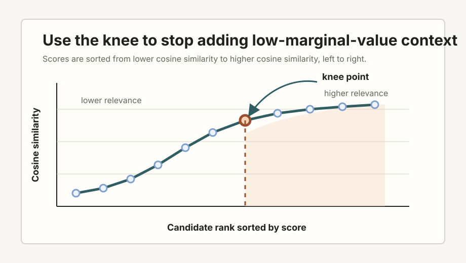

Kneedle Cheat Sheet for Dynamic Top-K in RAG
A practical cheat sheet for detecting diminishing retrieval relevance and selecting candidate context with guardrails.
What This Is For
In retrieval-augmented generation, developers often choose a fixed
top_k: retrieve five chunks, ten chunks, or twenty chunks.
That can work, but it treats every query as if it has the same evidence
shape. Some queries have one or two clearly relevant chunks. Others need
a broader evidence set. Kneedle provides a deterministic way to inspect
the retrieval score curve and estimate where additional chunks begin to
add diminishing relevance.
Plain-English rule: retrieve broadly, sort by score, find the bend in the relevance curve, and use that bend as a proposed dynamic cutoff before final context packing.
Kneedle is not a relevance judge. It is a curve-shape heuristic. It should be bounded, validated, and combined with retrieval quality checks.
The Core Idea
Kneedle identifies a knee point in a curve: the place where the curve changes from steep improvement to a flatter region. In RAG, this is useful when sorted retrieval scores show a visible transition between materially better candidates and candidates that add little marginal value.
There are two equivalent ways to visualize the problem:
- Descending relevance: highest scores first, then a drop and flattening tail. Keep items before the knee.
- Ascending relevance: lower scores first, then a rise that begins to flatten near the strongest candidates. Keep items to the right of the knee.
This cheat sheet uses the second view in the diagram because it makes the knee read left-to-right as a transition from lower relevance to higher relevance.

top_k, token budget, diversity, source quality, and
reranker checks.Basic Workflow
- Retrieve more candidates than you expect to use, such as
top_30ortop_50. - Score candidates using the retrieval or reranking score you trust most.
- Sort candidates by score.
- Run Kneedle on the score curve.
- Convert the knee location into a proposed dynamic
top_k. - Apply guardrails:
min_k,max_k, token budget, diversity, source quality, and score floors. - Validate against answer quality, citation support, recall, latency, and cost.
Python Sketch
This example sorts cosine scores from lower to higher, finds the knee on an increasing concave curve, and keeps the candidates at or above the knee.
from kneed import KneeLocator
candidates = [
{"id": "c1", "score": 0.42},
{"id": "c2", "score": 0.45},
{"id": "c3", "score": 0.49},
{"id": "c4", "score": 0.55},
{"id": "c5", "score": 0.63},
{"id": "c6", "score": 0.70},
{"id": "c7", "score": 0.76},
{"id": "c8", "score": 0.79},
{"id": "c9", "score": 0.81},
{"id": "c10", "score": 0.82},
]
ascending = sorted(candidates, key=lambda item: item["score"])
scores = [item["score"] for item in ascending]
ranks = list(range(1, len(scores) + 1))
kneedle = KneeLocator(
ranks,
scores,
curve="concave",
direction="increasing",
S=1.0,
)
knee_rank = kneedle.knee
if knee_rank is None:
selected = sorted(candidates, key=lambda item: item["score"], reverse=True)[:5]
else:
# Convert 1-based knee rank into a zero-based list index.
knee_index = knee_rank - 1
selected = ascending[knee_index:]
print([item["id"] for item in selected])Production Guardrail Pattern
The raw knee should rarely be used by itself. A practical production version usually clamps the result and then applies operational filters.
from kneed import KneeLocator
def choose_kneedle_top_k(candidates, min_k=3, max_k=12, fallback_k=5):
if not candidates:
return []
ascending = sorted(candidates, key=lambda item: item["score"])
scores = [item["score"] for item in ascending]
ranks = list(range(1, len(scores) + 1))
kneedle = KneeLocator(
ranks,
scores,
curve="concave",
direction="increasing",
S=1.0,
)
if kneedle.knee is None:
selected_count = fallback_k
descending = sorted(candidates, key=lambda item: item["score"], reverse=True)
return descending[:selected_count]
knee_index = kneedle.knee - 1
selected = ascending[knee_index:]
selected = sorted(selected, key=lambda item: item["score"], reverse=True)
selected_count = max(min_k, min(len(selected), max_k))
return selected[:selected_count]Where Kneedle Fits in a RAG Pipeline
broad retrieval
-> optional hybrid retrieval or rank fusion
-> reranking
-> Kneedle on sorted relevance scores
-> min/max/token guardrails
-> diversity and source-quality filtering
-> final context pack
-> answer generation
-> citation and support checksKneedle is most useful after broad retrieval and, where available, after reranking. Raw embedding similarity can be noisy. A stronger reranker may produce a score curve that better reflects actual candidate usefulness.
Important Caveats
- Kneedle sees shape, not truth. If your retriever confidently ranks irrelevant chunks, the knee can still look clean.
- Flat curves are ambiguous. A flat score curve may mean the query is broad, the corpus is homogeneous, or the retriever is not separating relevance well.
- Score scales may not travel. Cosine similarity is not always comparable across query types, embedding models, corpora, or retrieval systems.
- Small candidate sets are unstable. Kneedle is more useful when you retrieve enough candidates to reveal curve shape.
- Redundancy still matters. The top side of the knee may contain near-duplicate chunks. Add diversity filtering or MMR when needed.
- Context budget still wins. Even good candidates may need to be summarized, compressed, deduplicated, or excluded.
Validation Checklist
Compare Kneedle-based dynamic selection against simpler baselines before trusting it in production.
- Fixed
top_3,top_5, andtop_10. - Absolute score threshold.
- Percentile threshold within each query.
- Z-score threshold within each query or query cohort.
- Reranker score cutoff.
- MMR or other diversity-aware selection.
- Hybrid retrieval plus reciprocal rank fusion.
Measure both retrieval and generation outcomes:
- answer correctness
- citation support
- evidence recall
- context precision
- unsupported-claim rate
- latency
- token cost
- failure rate by query type
Other Approaches to Consider
Fixed top_k: simple, stable, and easy
to reason about, but insensitive to query difficulty.
Score threshold: useful when scores are calibrated, but brittle when score distributions shift.
Percentile or z-score threshold: useful for query-local selection when absolute scores are hard to compare.
Reranker cutoff: often better than raw embedding similarity if the reranker is strong and well validated.
MMR: useful when the top-ranked candidates are redundant and the model needs diverse evidence.
Hybrid retrieval and reciprocal rank fusion: useful when lexical and semantic retrieval catch different relevant evidence, but the combined candidate set still needs narrowing.
LLM-based context selection: can help with nuanced evidence triage, but should usually come after deterministic narrowing because it adds cost, latency, and another failure surface.
References
- Satopaa, V.; Albrecht, J.; Irwin, D.; and Raghavan, B. “Finding a Kneedle in a Haystack: Detecting Knee Points in System Behavior.” PDF.
kneedPython package documentation. kneed.readthedocs.io.- Carbonell, J. and Goldstein, J. “The Use of MMR, Diversity-Based Reranking for Reordering Documents and Producing Summaries.” ACM Digital Library.
Bottom Line
Kneedle is a useful deterministic heuristic for adaptive
top_k selection in RAG. It helps identify where additional
retrieved candidates begin to add diminishing relevance. It should not
be treated as a relevance oracle. Use it with retrieval guardrails,
reranking where possible, context-budget controls, and validation
against downstream answer quality.